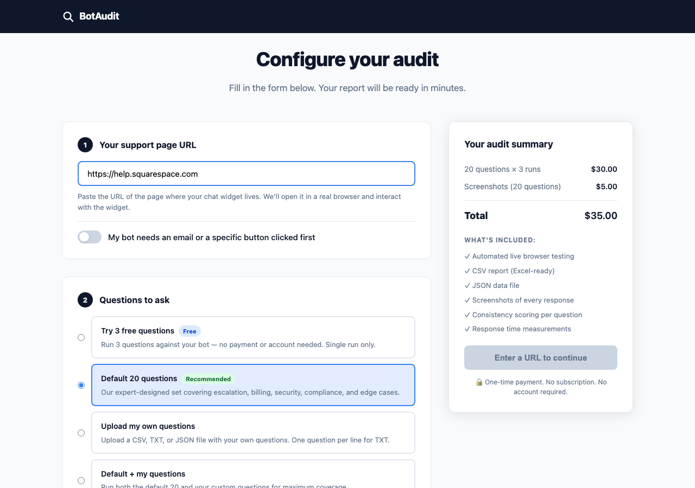
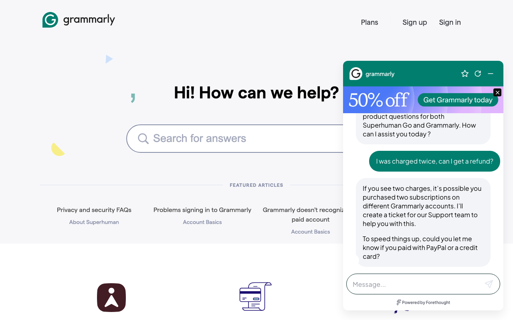
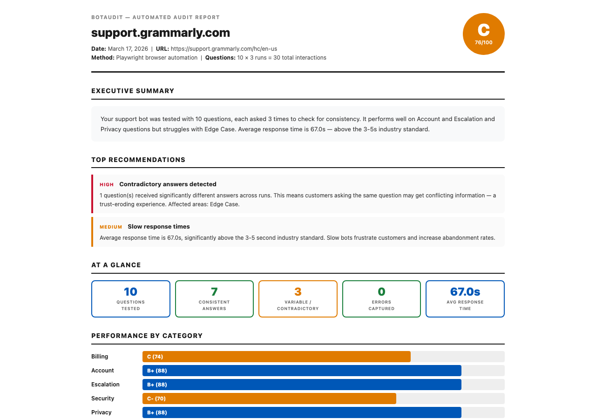

BotAudit automatically tests your AI support bot — asking real customer questions, multiple times, in a real browser — and grades it A–F on response quality, reliability, and consistency. No API keys. No integrations. Just paste a URL.
We ran it on 7 real companies’ bots. Here’s what we found.
BotAudit auto-detects 15+ chat platforms — Zendesk, Intercom, Ada, Forethought, Drift, and more. No setup required.
Use 20 expert-designed questions across 6 categories, or upload your own. Each question can be asked 1x, 3x, or 5x to measure consistency.

Every question is sent to your actual chat widget in a fresh browser session, exactly as a real customer would. Screenshots are captured for every interaction.

Letter grade, executive summary, category breakdown, and specific recommendations — plus a shareable link to view results online.

Quality 50% · Reliability 25% · Consistency 25%
▼The grade weights response quality highest — a bot that gives helpful answers in different words still scores well. Only truly contradictory answers (where a customer gets conflicting information) penalise the consistency score. Category-level grades show exactly where the bot excels or struggles.
Plain-English findings with top recommendations
▼Auto-generated from the results: what the bot handles well, where it struggles, average response time, and up to 5 prioritised recommendations for the bot team.
Goes beyond exact string matching
▼Traditional tools flag AI bots as “inconsistent” whenever they rephrase. BotAudit uses cosine similarity to classify responses as Identical, Equivalent, Variable, or Contradictory — only the last one is a real problem.
Did it answer, or just deflect?
▼Each response is rated on topic relevance, actionable steps, empathy, and whether the bot gave specific guidance or sent the user to a generic help page. Ratings range from Answered down to Deflected, Escalated, and Failed.
See exactly what your customers see
▼Every interaction is captured as a screenshot — the widget open, the question sent, and the response received. Useful for bug reports and stakeholder presentations.
Send to your team without a login
▼Every completed audit gets a permanent shareable URL that anyone can view without an account. Share with your bot vendor, CX team, or leadership.